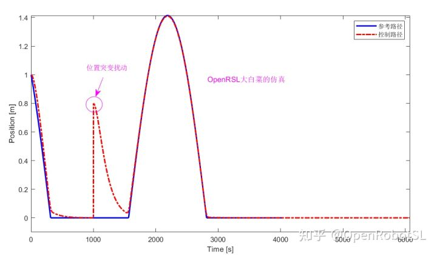
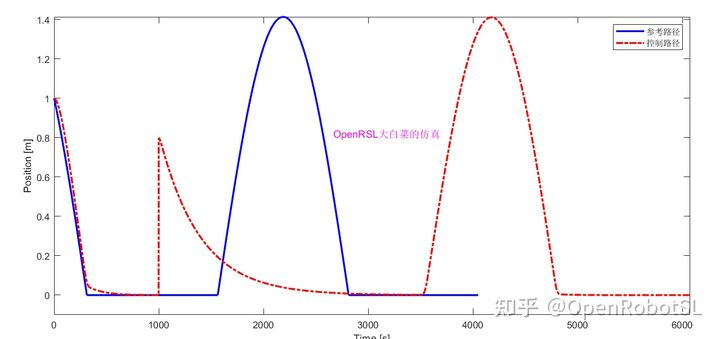
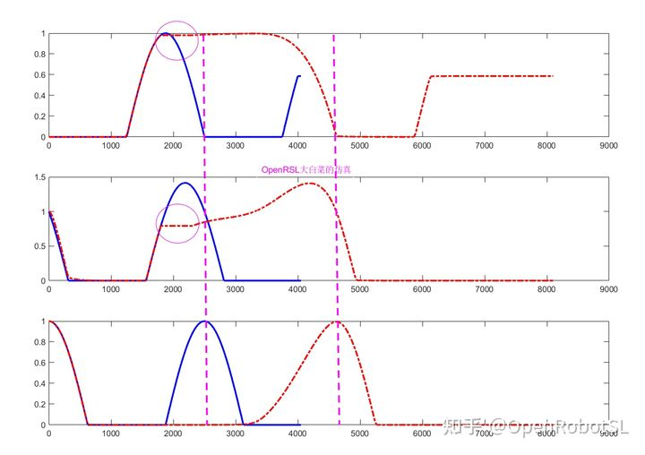
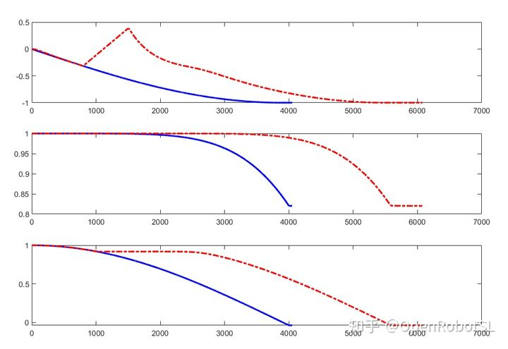

Home
本文转载自： https://zhuanlan.zhihu.com/p/375528658
只有规划的机器人其实不具备高阶任务能力，为了突出协作等机器人特有人机交互功能是本菜研究重点。
接着桂博之后说一点个人想法
https://zhuanlan.zhihu.com/p/32365180碰撞检测最核心的应该就是外力估计了，不管是靠算法，电流，还是传感器都是为了高精度估计出受到的外力大小。
这些方法都比较成熟了，那么有没有考虑过碰撞检测后的问题。
1：急停。丧失运动，且没有柔顺性。
2：阻抗控制。有一定阈值，且改变轨迹。
还有一个通病就是丧失了原有运动规律。而且大部分在没有末端碰撞前提下，都是靠关节来做检测，那么就会存在关节运动与笛卡尔任务不匹配，不同步问题。
那么为了解决以上问题，提出几个想法仅供参考。
1.单关节/单自由度下 受扰运动
分为两种情况
情况1
蓝色是规划器给定参考路径，红色点线是控制器生成（反馈）的路径。会发现这种情况下可以回复到原先运动状态，也就是我们经常做的鲁棒控制等，缺点是丢失一部分运动信息，且受到参数影响比较大，超出控制范围品质变差。

情况2
会发现受到扰动后，能回复原有运动，且不丢失信息，缺点就是延时比较大。最简单的方案就是运动到离开点，再继续运动。有个很大问题需要考虑如何计算拼接点速度规划，否则就失去动态性能，相当于PTP启停规划，时间比较浪费。

2.多关节/多自由度下 受扰运动
为了解决上面两种缺点，也算是寻找一个平衡点，能不能尽量保留原始路径信息（所有点都经过），又能不产生比较大的延时，同时动态过程要稳定呢。
核心难点在同步控制上，这个是个比较棘手的问题
下图会发现，关节1-2同时受到扰动，3关节未受到扰动。
但是三个关节运动全部基于扰动同步控制住了!
粉色圈圈是对1-2关节扰动，粉色虚线区间是过渡控制。

最后补一个关节同步扰动视频。。。笛卡尔扰动同样效果。
可以看到1关节添加扰动，关节空间轨迹没有变化，我意思是原始运动点信息没有任何丢失。同时其他关节同步响应。

视频轨迹是为了可视化，映射到笛卡尔空间，所以笛卡尔轨迹其实是轻微变化的（关节过渡控制造成）。但是比起鲁棒等控制效果已经有很大提升，同时解决了简单启停规划方法造成的巨大时间浪费。算是一个比较平衡性能的效果。
如果是笛卡尔扰动只需要被控对象替换即可，那样就可以完全保证笛卡尔轨迹不改变，我就懒得做仿真了。
蓝色轨迹是期望，红色是实际控制+反馈轨迹
https://www.zhihu.com/zvideo/1381301451658952704补一个笛卡尔位置扰动控制
https://www.zhihu.com/zvideo/1382727210051162112姿态跟踪，没有加扰动。。忘了
https://www.zhihu.com/zvideo/1383117204603330560姿态抗扰控制，可以观察到 偏离期望姿态轨迹时候 尽量返回原始姿态轨迹，尽量保留原始姿态信息
https://www.zhihu.com/zvideo/1383121035441557504
======================================================================
我的测试结果及程序
下面是我测试的代码：